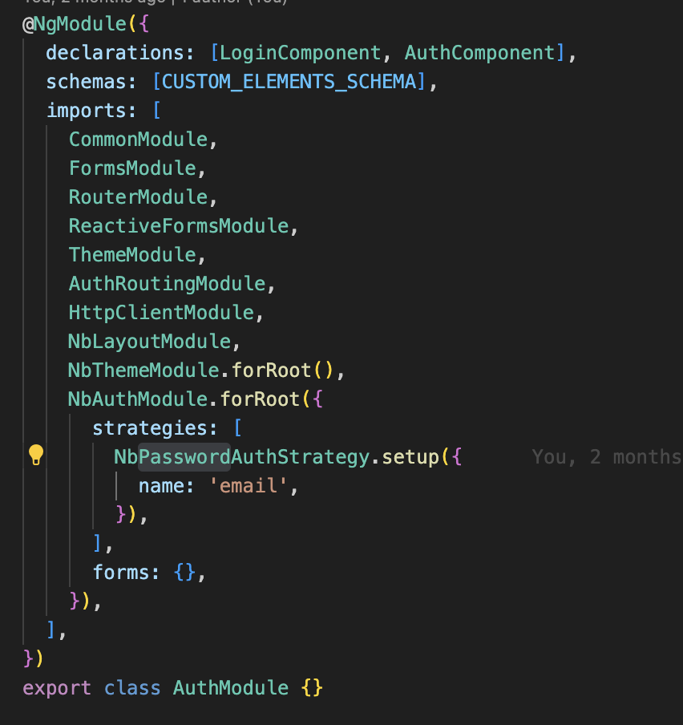

<div class="intro-wrapper">
  <div class="1st-phase">
    <nb-card>
      <nb-card-header fixed>
        <h2 class="nb-card-header-title">
          Receiving user token after login/registration
        </h2>
      </nb-card-header>
      <nb-card-body>
        <ul>
          <li>
            At this step, it's time to get a user token. Primarily, we need a
            code. With the help of this code, we call the getToken API, which
            returns a token after a successful OAuth 2.0 authentication. This
            token will allow us to communicate with the server and, for
            instance, display the username in the header of the application.
          </li>
          <li>
            Let's assume that your backend returns a JWT token so that we can
            use the token payload to extract user info out of it. Each Strategy
            specifies which token class is going to be used by default.
          </li>
          <li>
            This authentication can be managed using different strategies. One
            such strategy is NbPasswordAuthStrategy. This strategy typically
            involves the use of an AuthToken and an AuthProvider to handle
            authentication tasks.
            <ul>
              <li>
                NbPasswordAuthStrategy is a strategy provided by Nebular for
                handling password-based authentication. It simplifies the
                process of logging in and managing user sessions.
              </li>
              
              <li>
                AuthToken is used to manage the token received after a
                successful authentication. This token is essential for
                maintaining a session and authorizing subsequent requests to the
                server.
              </li>
              <li>
                AuthProvider is the service responsible for interacting with the
                backend server to perform authentication operations such as
                login, register, and token refresh.
              </li>
            </ul>
          </li>
        </ul>
      </nb-card-body>
    </nb-card>

    <nb-card>
      <nb-card-header fixed>
        <h2 class="nb-card-header-title">Setting a User token</h2>
      </nb-card-header>
      <nb-card-body>
        <p>
          When we get the token, we call the authorize method. The authorize
          method is part of an authentication service, designed to handle the
          authorization process. This method initiates a request to obtain
          tokens and processes the response.
        </p>
        
        <p>
          Process Response:If the response contains an access token and a
          refresh token: Save the tokens and their expiry. Navigate the user to
          the last accessed URL or the home path.Return true indicating
          successful authorization. If tokens are not received, return false
        </p>

        
      </nb-card-body>
    </nb-card>
  </div>
</div>
